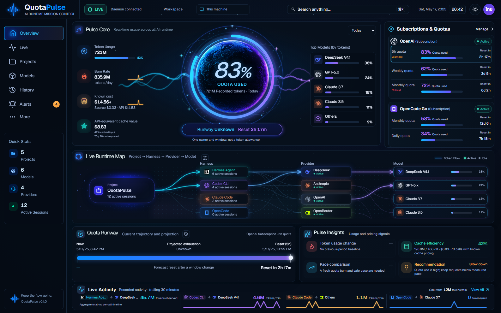
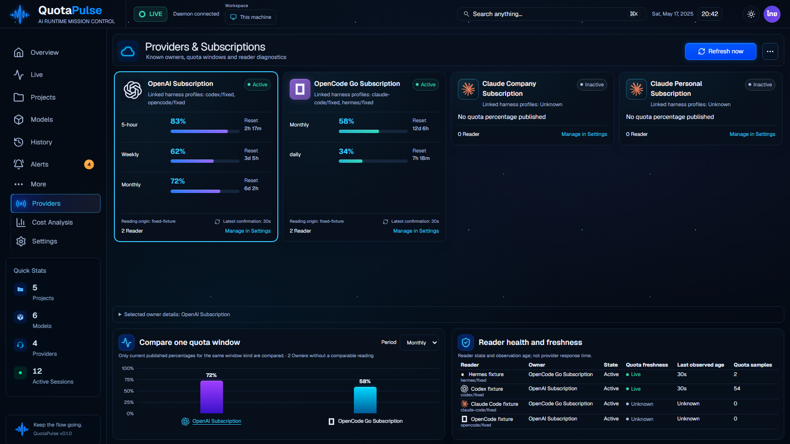
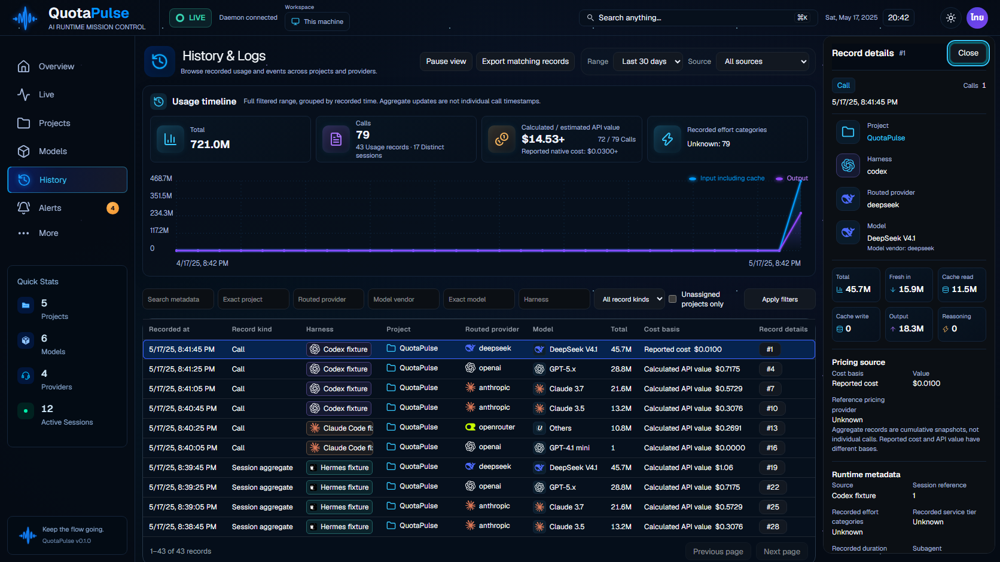
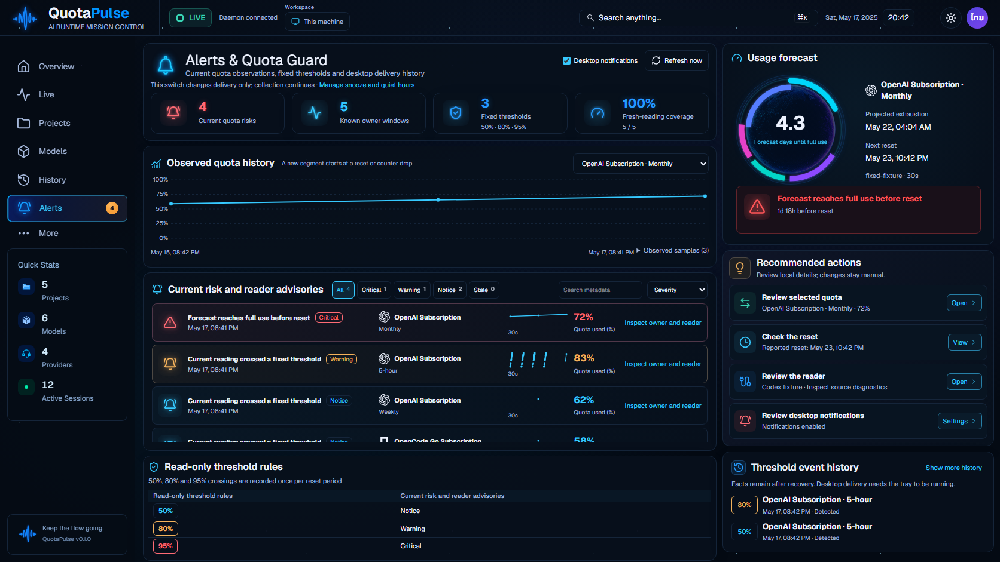
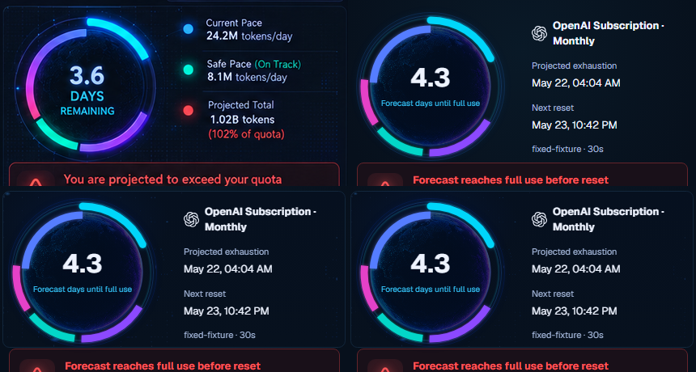

QuotaPulse v1.85.84: original / current Actual compiled application using synthetic data through the real API. Ready artwork and module loading advance the blueprint; whole-eight visual acceptance remains open. This is not a 99% likeness score.
Validation and limits | Actual module loading/error images | All-eight remaining differences | Module review
History current and previous83 show fresh entry before Escape; actual records and factual substitutions remain authoritative.
overview: original / current84 / previous83 Original concept Current84 actual API fixture Previous83 
live: original / current84 / previous83 Original concept Current84 actual API fixture Previous83 projects: original / current84 / previous83 Original concept Current84 actual API fixture Previous83 models: original / current84 / previous83 Original concept Current84 actual API fixture Previous83 providers: original / current84 / previous83 Original concept Current84 actual API fixture Previous83 
cost: original / current84 / previous83 Original concept Current84 actual API fixture Previous83 history: original / current84 / previous83 Original concept Current84 actual API fixture 
Previous83 alerts: original / current84 / previous83 Original concept Current84 actual API fixture Previous83 
Providers: Source / previous83 / current84 (uniform diagnostic crops) Alerts: Source / previous83 / rejected wide / selected compact centers 